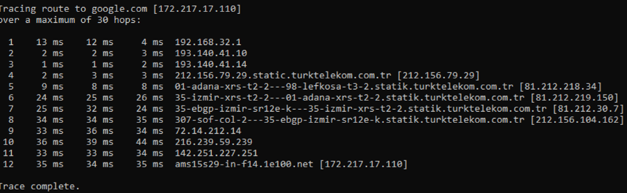

Scanning Activity
Use these basic tools and make a list that details the following information
Q1) How many hops from your machine to your assigned website?

Q2) which step causes the biggest delay in the route? What is the average duration of that delay?

Q3) what are the main nameservers for the website?

Q4) Who is the registered contact?

Q5) What is the MX record for the website?

Q6) Where is the website hosted?

reflection
i used tracert for my question 1 instead of traceroute due to some challeges
finding question 2 was a little hard,i experienced some challenges what my dig then i had to surf the internet and found
whois i installed it on my laptop which made it easer for me to scan